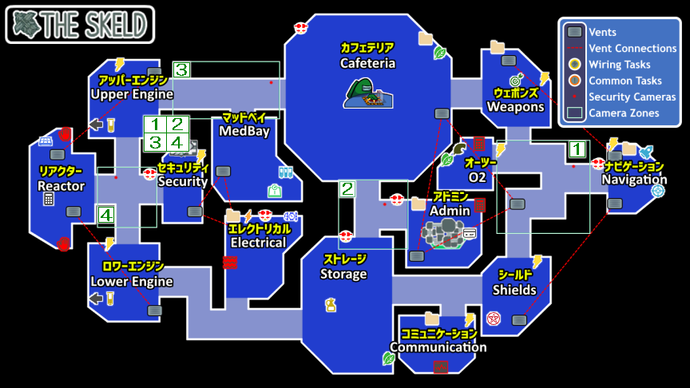
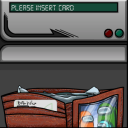
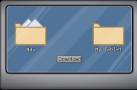
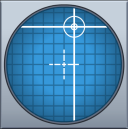
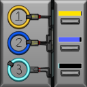
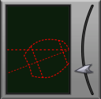
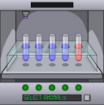
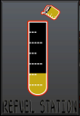
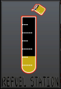
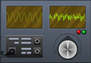

◇ 宇宙人狼(among-us) THE SKELD◇
THE SKELDのタスクとサボタージュです
──────────< タスク >──────────
左側のアイコン：地図上のマーク
括弧付き数字：タスクをこなす場所の数
タスク画像 |
タスク名 |
場所 | |
|---|---|---|---|
 |
【Common Tasks】 財布のカードを抜いて |
Admin | |
(3) |
|
【Wiring Tasks】 線を繋げる |
Electrical Cafeteria Navigation admin Storage Security |
↓
(2) |
|
Divert Power to Upper Engine 光ってるとこ上にあげる |
Electrical |
|
Accept Diverted Power 真ん中タップ |
Upper Engines Lower Engines Weapons Shields Navigation Communications O2 Security |
|
(2) |
 |
Download Data ボタンを押す |
Cafeteria Communications Electrical Navigation Weapons →admin |
|
|
Clear Asteroids 20個撃つ |
Weapons |
(2) |
|
Empty Garbage レバーを降ろしてごみを捨てる |
Cafeteria →Storage ────── O2 →Storage |
|
|
Clean O2 Filter 排気口にはっぱをスワイプ |
O2 |
 |
Stabilize Steering 交点を真ん中に合わせる |
Navigation | |
|
|
Chart Course 宇宙船を線に沿ってドラッグ |
Navigation |
|
|
Prime Shields 赤をタップして白にする |
Shields |
 |
Calibrate Distributor 輪の口が右に来た時に |
Electrical | |
↓ (4) |
|
Fuel Engines 右にあるボタンを |
Storage →Upper Engine →Storage →Lower Engine |
(2) |
 |
Align Engine Output 矢印動かして線を水平にする |
Upper Engines →Lower Engines |
|
|
Unlock Manifolds 1から順番に押す |
Reactor |
|
|
Start Reactor 左で光ったパターンを右で押す |
Reactor |
|
|
Submit Scan 乗ってスキャンされる |
MedBay |
 |
Inspect Sample スイッチ押して開始 |
MedBay |


 ⇒ 
⇒ 


──────────< サボタージュ >──────────
地図上のアイコンは赤色表示しています
sabotage画像 |
sabotage名 |
場所 | |
|---|---|---|---|
|
|
Oxygen Depleted メモの数字を押す |
O2 Admin |
 |
Comms Sabotaged 波形を合わせる |
Communications | |
|
|
Fix Lights スイッチ全部点灯させる |
Electrical |
|
|
Reactor Meltdown 2か所同時に(2人で)タッチする |
Reactor |


Copyright(c)2020 りゅ all rights reserved.